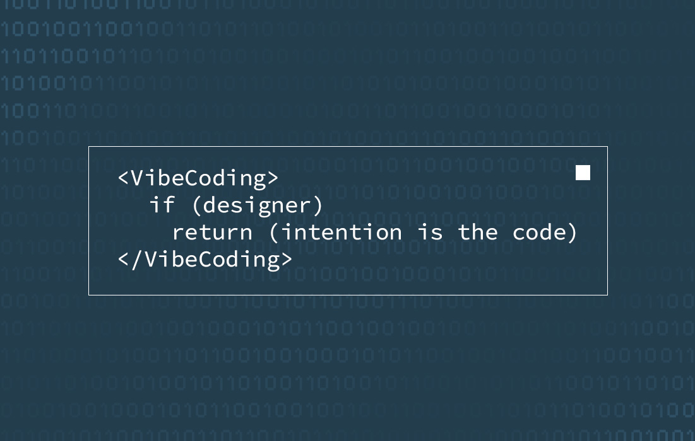
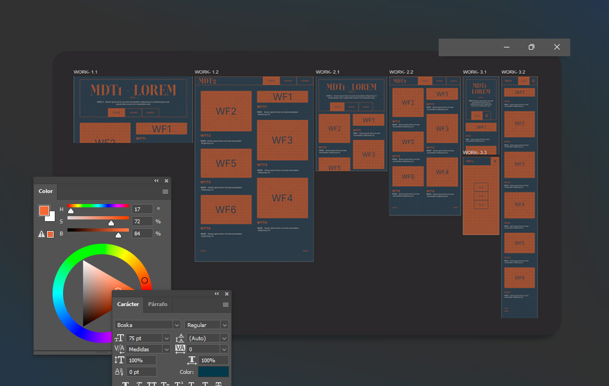
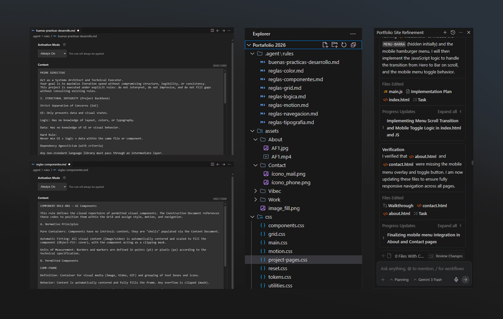
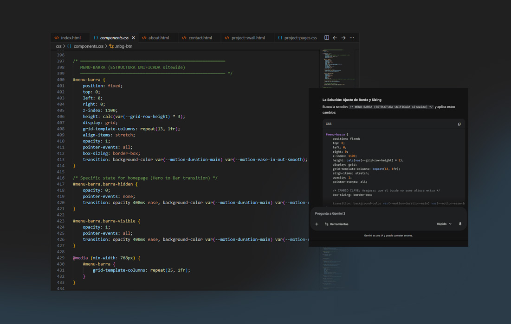

Vibe Coding
Process
Saved the best for last? I appreciate your thorough
review of my work.
...
I engineered a strategic design system that integrates
AI-driven language environments to significantly accelerate the digital product development
lifecycle. When executed correctly, this methodology effectively bridges the gap between design and
engineering, fostering a high-velocity workspace that streamlines the transition from concept to
production. As a definitive proof of concept, this entire portfolio was built using this integrated
framework, demonstrating its capacity to optimize efficiency without compromising design
integrity.
I engineered a strategic design system that integrates
AI-driven language environments to significantly accelerate the digital product development
lifecycle. When executed correctly, this methodology effectively bridges the gap between design and
engineering, fostering a high-velocity workspace that streamlines the transition from concept to
production. As a definitive proof of concept, this entire portfolio was built using this integrated
framework, demonstrating its capacity to optimize efficiency without compromising design
integrity.
Great choice to start with.
...
Year: 2025 - Present
Skills: UX/UI
Design, Vibe Coding, Antigravity, Claude, Storytelling
Role: Vibe
Coder
Year: 2025 -
Present
Skills: UX/UI Design, Vibe Coding, Antigravity, Claude,
Storytelling
Role: Vibe Coder
(This serves as a technical exposition of the methodology and does not represent a commercial or live project application)

My workflow leverages Google’s Antigravity as the primary environment, utilizing its native agent for
high-scale architectural tasks, while employing Gemini and Claude as an auxiliary guide for technical
prompting and manual refinements.
I’ve found that AI performance peaks when grounded in visual
context; therefore, my process begins with a comprehensive flat design phase to architect the product’s
visual hierarchy and components. This is followed by the creation of a robust rule repository within
Antigravity, where I define everything from design tokens and complex motion behaviors to logic-driven
identifiers, ensuring seamless traceability and precision throughout the development.



With the rules established and visual references set, the process moves into the construction phase.
Here, I "invoke" the design tokens defined in the rules to build upon the grid (synthesizing color,
components, typography, motion, etc.) to dictate the behavior and aesthetics of every pixel on the
screen.
To optimize the AI’s contextual understanding, I feed the previously designed interface frames
directly
into the prompt. The final stage involves fine-tuning details through direct collaboration with the AI,
followed by the integration of final assets and copy. Before deployment, I conduct a user simulation
using Antigravity’s native agent to validate the flow.
This methodology currently saves
approximately
30% in time and resources compared to traditional workflows. A margin that is expected to grow
exponentially as AI capabilities and prompting expertise continue to evolve.